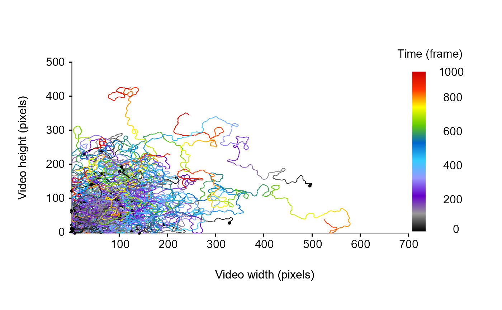

Given a list of data frame containing tracking informations for each tracklet, this function returns a list of resampled tracklets according to the length of the resampling step specified by the Tstep argument.
Arguments
- TimeCol
A character string corresponding to the name of the column containing time information (e.g., "frame").
- Tstep
A numeric value corresponding to the length of the resampling step according to the time unit used in TimeCol (e.g., frame).
- progress
A logical value (i.e., TRUE or FALSE) indicating whether a progress bar should be displayed to inform process progression.
- trackDatA
A list of data frame containing tracking informations for each tracklet.
Examples
set.seed(2023)
# generate some dummy tracklets
## start to specify some parameters to generate tracklets
trackN <- 50 # the number of tracklets to simulate
trackL <-
100:1000 # the length of the tracklets or a sequence to randomly sample tracklets length
trackList <- stats::setNames(lapply(lapply(seq(trackN), function(i)
trajr::TrajGenerate(sample(trackL, 1), random = TRUE, fps = 1)), function(j)
data.frame(
x.pos = j$x - min(j$x),
y.pos = j$y - min(j$y),
frame = j$time
)), seq(trackN))
# check the tracklets
MoveR::drawTracklets(trackList,
timeCol = "frame")

# convert the time unit (frame) to seconds using analyseTracklets (according to a frame rate of 25 fps)
trackListV1 <-
MoveR::analyseTracklets(trackList,
customFunc = list(
# convert the time expressed in frame in second using a conversion factor of 25 frame per second
TimeSec = function(x)
x[["frame"]] / 25
))
# example 1: resample the tracklets every 0.2 seconds
## check the size of the tracklets
trackSize <- unlist(lapply(trackListV1, function(x)
nrow(x)))
## resample the tracklets every 1 seconds
trackListSampled1S <- MoveR::resamplTracklets(trackListV1,
TimeCol = "TimeSec",
Tstep = 1)
## check the size of the tracklets after resampling
trackSize1s <- unlist(lapply(trackListSampled1S, function(x)
nrow(x)))
## Compare the tracklets size
cbind(trackSize, trackSize1s)
#> trackSize trackSize1s
#> 1 985 40
#> 2 334 14
#> 3 648 26
#> 4 109 5
#> 5 872 35
#> 6 613 25
#> 7 215 9
#> 8 640 26
#> 9 876 36
#> 10 982 40
#> 11 223 9
#> 12 679 28
#> 13 720 29
#> 14 491 20
#> 15 670 27
#> 16 848 34
#> 17 425 17
#> 18 810 33
#> 19 649 26
#> 20 180 8
#> 21 509 21
#> 22 186 8
#> 23 275 11
#> 24 987 40
#> 25 254 11
#> 26 486 20
#> 27 615 25
#> 28 889 36
#> 29 320 13
#> 30 450 18
#> 31 721 29
#> 32 974 39
#> 33 908 37
#> 34 780 32
#> 35 497 20
#> 36 316 13
#> 37 228 10
#> 38 865 35
#> 39 348 14
#> 40 184 8
#> 41 989 40
#> 42 715 29
#> 43 373 15
#> 44 194 8
#> 45 849 34
#> 46 717 29
#> 47 603 25
#> 48 119 5
#> 49 577 24
#> 50 147 6
# example 2: resample the tracklets every 1 minutes
## resample the tracklets every 0.10 seconds
trackListSampled0.10S <- MoveR::resamplTracklets(trackListV1,
TimeCol = "TimeSec",
Tstep = 0.10)
#> Warning: In tracklet :
#> some time units are missing c(0.1, 0.3, 0.5, 0.7, 0.9, 1.1, 1.3, 1.5, 1.7, 1.9, 2.1, 2.3, 2.5, 2.7, 2.9, 3.1, 3.3, 3.5, 3.7, 3.9, 4.1, 4.3, 4.5, 4.7, 4.9, 5.1, 5.3, 5.5, 5.7, 5.9, 6.1, 6.3, 6.5, 6.7, 6.9, 7.1, 7.3, 7.5, 7.7, 7.9, 8.1, 8.3, 8.5, 8.7, 8.9, 9.1, 9.3, 9.5, 9.7, 9.9, 10.1, 10.3, 10.5, 10.7, 10.9, 11.1, 11.3, 11.5, 11.7, 11.9, 12.1, 12.3, 12.5, 12.7, 12.9, 13.1, 13.3, 13.5, 13.7, 13.9, 14.1, 14.3, 14.5, 14.7, 14.9, 15.1, 15.3, 15.5, 15.7, 15.9, 16.1, 16.3, 16.5, 16.7, 16.9, 17.1, 17.3, 17.5, 17.7, 17.9, 18.1, 18.3,
#> 18.5, 18.7, 18.9, 19.1, 19.3, 19.5, 19.7, 19.9, 20.1, 20.3, 20.5, 20.7, 20.9, 21.1, 21.3, 21.5, 21.7, 21.9, 22.1, 22.3, 22.5, 22.7, 22.9, 23.1, 23.3, 23.5, 23.7, 23.9, 24.1, 24.3, 24.5, 24.7, 24.9, 25.1, 25.3, 25.5, 25.7, 25.9, 26.1, 26.3, 26.5, 26.7, 26.9, 27.1, 27.3, 27.5, 27.7, 27.9, 28.1, 28.3, 28.5, 28.7, 28.9, 29.1, 29.3, 29.5, 29.7, 29.9, 30.1, 30.3, 30.5, 30.7, 30.9, 31.1, 31.3, 31.5, 31.7, 31.9, 32.1, 32.3, 32.5, 32.7, 32.9, 33.1, 33.3, 33.5, 33.7, 33.9, 34.1, 34.3, 34.5, 34.7, 34.9, 35.1,
#> 35.3, 35.5, 35.7, 35.9, 36.1, 36.3, 36.5, 36.7, 36.9, 37.1, 37.3, 37.5, 37.7, 37.9, 38.1, 38.3, 38.5, 38.7, 38.9, 39.1, 39.3),
#> resampling have added lines containing NA, perhaps consider modifying Tstep
#> Warning: In tracklet :
#> some time units are missing c(0.1, 0.3, 0.5, 0.7, 0.9, 1.1, 1.3, 1.5, 1.7, 1.9, 2.1, 2.3, 2.5, 2.7, 2.9, 3.1, 3.3, 3.5, 3.7, 3.9, 4.1, 4.3, 4.5, 4.7, 4.9, 5.1, 5.3, 5.5, 5.7, 5.9, 6.1, 6.3, 6.5, 6.7, 6.9, 7.1, 7.3, 7.5, 7.7, 7.9, 8.1, 8.3, 8.5, 8.7, 8.9, 9.1, 9.3, 9.5, 9.7, 9.9, 10.1, 10.3, 10.5, 10.7, 10.9, 11.1, 11.3, 11.5, 11.7, 11.9, 12.1, 12.3, 12.5, 12.7, 12.9, 13.1, 13.3),
#> resampling have added lines containing NA, perhaps consider modifying Tstep
#> Warning: In tracklet :
#> some time units are missing c(0.1, 0.3, 0.5, 0.7, 0.9, 1.1, 1.3, 1.5, 1.7, 1.9, 2.1, 2.3, 2.5, 2.7, 2.9, 3.1, 3.3, 3.5, 3.7, 3.9, 4.1, 4.3, 4.5, 4.7, 4.9, 5.1, 5.3, 5.5, 5.7, 5.9, 6.1, 6.3, 6.5, 6.7, 6.9, 7.1, 7.3, 7.5, 7.7, 7.9, 8.1, 8.3, 8.5, 8.7, 8.9, 9.1, 9.3, 9.5, 9.7, 9.9, 10.1, 10.3, 10.5, 10.7, 10.9, 11.1, 11.3, 11.5, 11.7, 11.9, 12.1, 12.3, 12.5, 12.7, 12.9, 13.1, 13.3, 13.5, 13.7, 13.9, 14.1, 14.3, 14.5, 14.7, 14.9, 15.1, 15.3, 15.5, 15.7, 15.9, 16.1, 16.3, 16.5, 16.7, 16.9, 17.1, 17.3, 17.5, 17.7, 17.9, 18.1, 18.3,
#> 18.5, 18.7, 18.9, 19.1, 19.3, 19.5, 19.7, 19.9, 20.1, 20.3, 20.5, 20.7, 20.9, 21.1, 21.3, 21.5, 21.7, 21.9, 22.1, 22.3, 22.5, 22.7, 22.9, 23.1, 23.3, 23.5, 23.7, 23.9, 24.1, 24.3, 24.5, 24.7, 24.9, 25.1, 25.3, 25.5, 25.7),
#> resampling have added lines containing NA, perhaps consider modifying Tstep
#> Warning: In tracklet :
#> some time units are missing c(0.1, 0.3, 0.5, 0.7, 0.9, 1.1, 1.3, 1.5, 1.7, 1.9, 2.1, 2.3, 2.5, 2.7, 2.9, 3.1, 3.3, 3.5, 3.7, 3.9, 4.1, 4.3),
#> resampling have added lines containing NA, perhaps consider modifying Tstep
#> Warning: In tracklet :
#> some time units are missing c(0.1, 0.3, 0.5, 0.7, 0.9, 1.1, 1.3, 1.5, 1.7, 1.9, 2.1, 2.3, 2.5, 2.7, 2.9, 3.1, 3.3, 3.5, 3.7, 3.9, 4.1, 4.3, 4.5, 4.7, 4.9, 5.1, 5.3, 5.5, 5.7, 5.9, 6.1, 6.3, 6.5, 6.7, 6.9, 7.1, 7.3, 7.5, 7.7, 7.9, 8.1, 8.3, 8.5, 8.7, 8.9, 9.1, 9.3, 9.5, 9.7, 9.9, 10.1, 10.3, 10.5, 10.7, 10.9, 11.1, 11.3, 11.5, 11.7, 11.9, 12.1, 12.3, 12.5, 12.7, 12.9, 13.1, 13.3, 13.5, 13.7, 13.9, 14.1, 14.3, 14.5, 14.7, 14.9, 15.1, 15.3, 15.5, 15.7, 15.9, 16.1, 16.3, 16.5, 16.7, 16.9, 17.1, 17.3, 17.5, 17.7, 17.9, 18.1, 18.3,
#> 18.5, 18.7, 18.9, 19.1, 19.3, 19.5, 19.7, 19.9, 20.1, 20.3, 20.5, 20.7, 20.9, 21.1, 21.3, 21.5, 21.7, 21.9, 22.1, 22.3, 22.5, 22.7, 22.9, 23.1, 23.3, 23.5, 23.7, 23.9, 24.1, 24.3, 24.5, 24.7, 24.9, 25.1, 25.3, 25.5, 25.7, 25.9, 26.1, 26.3, 26.5, 26.7, 26.9, 27.1, 27.3, 27.5, 27.7, 27.9, 28.1, 28.3, 28.5, 28.7, 28.9, 29.1, 29.3, 29.5, 29.7, 29.9, 30.1, 30.3, 30.5, 30.7, 30.9, 31.1, 31.3, 31.5, 31.7, 31.9, 32.1, 32.3, 32.5, 32.7, 32.9, 33.1, 33.3, 33.5, 33.7, 33.9, 34.1, 34.3, 34.5, 34.7),
#> resampling have added lines containing NA, perhaps consider modifying Tstep
#> Warning: In tracklet :
#> some time units are missing c(0.1, 0.3, 0.5, 0.7, 0.9, 1.1, 1.3, 1.5, 1.7, 1.9, 2.1, 2.3, 2.5, 2.7, 2.9, 3.1, 3.3, 3.5, 3.7, 3.9, 4.1, 4.3, 4.5, 4.7, 4.9, 5.1, 5.3, 5.5, 5.7, 5.9, 6.1, 6.3, 6.5, 6.7, 6.9, 7.1, 7.3, 7.5, 7.7, 7.9, 8.1, 8.3, 8.5, 8.7, 8.9, 9.1, 9.3, 9.5, 9.7, 9.9, 10.1, 10.3, 10.5, 10.7, 10.9, 11.1, 11.3, 11.5, 11.7, 11.9, 12.1, 12.3, 12.5, 12.7, 12.9, 13.1, 13.3, 13.5, 13.7, 13.9, 14.1, 14.3, 14.5, 14.7, 14.9, 15.1, 15.3, 15.5, 15.7, 15.9, 16.1, 16.3, 16.5, 16.7, 16.9, 17.1, 17.3, 17.5, 17.7, 17.9, 18.1, 18.3,
#> 18.5, 18.7, 18.9, 19.1, 19.3, 19.5, 19.7, 19.9, 20.1, 20.3, 20.5, 20.7, 20.9, 21.1, 21.3, 21.5, 21.7, 21.9, 22.1, 22.3, 22.5, 22.7, 22.9, 23.1, 23.3, 23.5, 23.7, 23.9, 24.1, 24.3),
#> resampling have added lines containing NA, perhaps consider modifying Tstep
#> Warning: In tracklet :
#> some time units are missing c(0.1, 0.3, 0.5, 0.7, 0.9, 1.1, 1.3, 1.5, 1.7, 1.9, 2.1, 2.3, 2.5, 2.7, 2.9, 3.1, 3.3, 3.5, 3.7, 3.9, 4.1, 4.3, 4.5, 4.7, 4.9, 5.1, 5.3, 5.5, 5.7, 5.9, 6.1, 6.3, 6.5, 6.7, 6.9, 7.1, 7.3, 7.5, 7.7, 7.9, 8.1, 8.3, 8.5),
#> resampling have added lines containing NA, perhaps consider modifying Tstep
#> Warning: In tracklet :
#> some time units are missing c(0.1, 0.3, 0.5, 0.7, 0.9, 1.1, 1.3, 1.5, 1.7, 1.9, 2.1, 2.3, 2.5, 2.7, 2.9, 3.1, 3.3, 3.5, 3.7, 3.9, 4.1, 4.3, 4.5, 4.7, 4.9, 5.1, 5.3, 5.5, 5.7, 5.9, 6.1, 6.3, 6.5, 6.7, 6.9, 7.1, 7.3, 7.5, 7.7, 7.9, 8.1, 8.3, 8.5, 8.7, 8.9, 9.1, 9.3, 9.5, 9.7, 9.9, 10.1, 10.3, 10.5, 10.7, 10.9, 11.1, 11.3, 11.5, 11.7, 11.9, 12.1, 12.3, 12.5, 12.7, 12.9, 13.1, 13.3, 13.5, 13.7, 13.9, 14.1, 14.3, 14.5, 14.7, 14.9, 15.1, 15.3, 15.5, 15.7, 15.9, 16.1, 16.3, 16.5, 16.7, 16.9, 17.1, 17.3, 17.5, 17.7, 17.9, 18.1, 18.3,
#> 18.5, 18.7, 18.9, 19.1, 19.3, 19.5, 19.7, 19.9, 20.1, 20.3, 20.5, 20.7, 20.9, 21.1, 21.3, 21.5, 21.7, 21.9, 22.1, 22.3, 22.5, 22.7, 22.9, 23.1, 23.3, 23.5, 23.7, 23.9, 24.1, 24.3, 24.5, 24.7, 24.9, 25.1, 25.3, 25.5),
#> resampling have added lines containing NA, perhaps consider modifying Tstep
#> Warning: In tracklet :
#> some time units are missing c(0.1, 0.3, 0.5, 0.7, 0.9, 1.1, 1.3, 1.5, 1.7, 1.9, 2.1, 2.3, 2.5, 2.7, 2.9, 3.1, 3.3, 3.5, 3.7, 3.9, 4.1, 4.3, 4.5, 4.7, 4.9, 5.1, 5.3, 5.5, 5.7, 5.9, 6.1, 6.3, 6.5, 6.7, 6.9, 7.1, 7.3, 7.5, 7.7, 7.9, 8.1, 8.3, 8.5, 8.7, 8.9, 9.1, 9.3, 9.5, 9.7, 9.9, 10.1, 10.3, 10.5, 10.7, 10.9, 11.1, 11.3, 11.5, 11.7, 11.9, 12.1, 12.3, 12.5, 12.7, 12.9, 13.1, 13.3, 13.5, 13.7, 13.9, 14.1, 14.3, 14.5, 14.7, 14.9, 15.1, 15.3, 15.5, 15.7, 15.9, 16.1, 16.3, 16.5, 16.7, 16.9, 17.1, 17.3, 17.5, 17.7, 17.9, 18.1, 18.3,
#> 18.5, 18.7, 18.9, 19.1, 19.3, 19.5, 19.7, 19.9, 20.1, 20.3, 20.5, 20.7, 20.9, 21.1, 21.3, 21.5, 21.7, 21.9, 22.1, 22.3, 22.5, 22.7, 22.9, 23.1, 23.3, 23.5, 23.7, 23.9, 24.1, 24.3, 24.5, 24.7, 24.9, 25.1, 25.3, 25.5, 25.7, 25.9, 26.1, 26.3, 26.5, 26.7, 26.9, 27.1, 27.3, 27.5, 27.7, 27.9, 28.1, 28.3, 28.5, 28.7, 28.9, 29.1, 29.3, 29.5, 29.7, 29.9, 30.1, 30.3, 30.5, 30.7, 30.9, 31.1, 31.3, 31.5, 31.7, 31.9, 32.1, 32.3, 32.5, 32.7, 32.9, 33.1, 33.3, 33.5, 33.7, 33.9, 34.1, 34.3, 34.5, 34.7, 34.9),
#> resampling have added lines containing NA, perhaps consider modifying Tstep
#> Warning: In tracklet :
#> some time units are missing c(0.1, 0.3, 0.5, 0.7, 0.9, 1.1, 1.3, 1.5, 1.7, 1.9, 2.1, 2.3, 2.5, 2.7, 2.9, 3.1, 3.3, 3.5, 3.7, 3.9, 4.1, 4.3, 4.5, 4.7, 4.9, 5.1, 5.3, 5.5, 5.7, 5.9, 6.1, 6.3, 6.5, 6.7, 6.9, 7.1, 7.3, 7.5, 7.7, 7.9, 8.1, 8.3, 8.5, 8.7, 8.9, 9.1, 9.3, 9.5, 9.7, 9.9, 10.1, 10.3, 10.5, 10.7, 10.9, 11.1, 11.3, 11.5, 11.7, 11.9, 12.1, 12.3, 12.5, 12.7, 12.9, 13.1, 13.3, 13.5, 13.7, 13.9, 14.1, 14.3, 14.5, 14.7, 14.9, 15.1, 15.3, 15.5, 15.7, 15.9, 16.1, 16.3, 16.5, 16.7, 16.9, 17.1, 17.3, 17.5, 17.7, 17.9, 18.1, 18.3,
#> 18.5, 18.7, 18.9, 19.1, 19.3, 19.5, 19.7, 19.9, 20.1, 20.3, 20.5, 20.7, 20.9, 21.1, 21.3, 21.5, 21.7, 21.9, 22.1, 22.3, 22.5, 22.7, 22.9, 23.1, 23.3, 23.5, 23.7, 23.9, 24.1, 24.3, 24.5, 24.7, 24.9, 25.1, 25.3, 25.5, 25.7, 25.9, 26.1, 26.3, 26.5, 26.7, 26.9, 27.1, 27.3, 27.5, 27.7, 27.9, 28.1, 28.3, 28.5, 28.7, 28.9, 29.1, 29.3, 29.5, 29.7, 29.9, 30.1, 30.3, 30.5, 30.7, 30.9, 31.1, 31.3, 31.5, 31.7, 31.9, 32.1, 32.3, 32.5, 32.7, 32.9, 33.1, 33.3, 33.5, 33.7, 33.9, 34.1, 34.3, 34.5, 34.7, 34.9, 35.1,
#> 35.3, 35.5, 35.7, 35.9, 36.1, 36.3, 36.5, 36.7, 36.9, 37.1, 37.3, 37.5, 37.7, 37.9, 38.1, 38.3, 38.5, 38.7, 38.9, 39.1),
#> resampling have added lines containing NA, perhaps consider modifying Tstep
#> Warning: In tracklet :
#> some time units are missing c(0.1, 0.3, 0.5, 0.7, 0.9, 1.1, 1.3, 1.5, 1.7, 1.9, 2.1, 2.3, 2.5, 2.7, 2.9, 3.1, 3.3, 3.5, 3.7, 3.9, 4.1, 4.3, 4.5, 4.7, 4.9, 5.1, 5.3, 5.5, 5.7, 5.9, 6.1, 6.3, 6.5, 6.7, 6.9, 7.1, 7.3, 7.5, 7.7, 7.9, 8.1, 8.3, 8.5, 8.7),
#> resampling have added lines containing NA, perhaps consider modifying Tstep
#> Warning: In tracklet :
#> some time units are missing c(0.1, 0.3, 0.5, 0.7, 0.9, 1.1, 1.3, 1.5, 1.7, 1.9, 2.1, 2.3, 2.5, 2.7, 2.9, 3.1, 3.3, 3.5, 3.7, 3.9, 4.1, 4.3, 4.5, 4.7, 4.9, 5.1, 5.3, 5.5, 5.7, 5.9, 6.1, 6.3, 6.5, 6.7, 6.9, 7.1, 7.3, 7.5, 7.7, 7.9, 8.1, 8.3, 8.5, 8.7, 8.9, 9.1, 9.3, 9.5, 9.7, 9.9, 10.1, 10.3, 10.5, 10.7, 10.9, 11.1, 11.3, 11.5, 11.7, 11.9, 12.1, 12.3, 12.5, 12.7, 12.9, 13.1, 13.3, 13.5, 13.7, 13.9, 14.1, 14.3, 14.5, 14.7, 14.9, 15.1, 15.3, 15.5, 15.7, 15.9, 16.1, 16.3, 16.5, 16.7, 16.9, 17.1, 17.3, 17.5, 17.7, 17.9, 18.1, 18.3,
#> 18.5, 18.7, 18.9, 19.1, 19.3, 19.5, 19.7, 19.9, 20.1, 20.3, 20.5, 20.7, 20.9, 21.1, 21.3, 21.5, 21.7, 21.9, 22.1, 22.3, 22.5, 22.7, 22.9, 23.1, 23.3, 23.5, 23.7, 23.9, 24.1, 24.3, 24.5, 24.7, 24.9, 25.1, 25.3, 25.5, 25.7, 25.9, 26.1, 26.3, 26.5, 26.7, 26.9, 27.1),
#> resampling have added lines containing NA, perhaps consider modifying Tstep
#> Warning: In tracklet :
#> some time units are missing c(0.1, 0.3, 0.5, 0.7, 0.9, 1.1, 1.3, 1.5, 1.7, 1.9, 2.1, 2.3, 2.5, 2.7, 2.9, 3.1, 3.3, 3.5, 3.7, 3.9, 4.1, 4.3, 4.5, 4.7, 4.9, 5.1, 5.3, 5.5, 5.7, 5.9, 6.1, 6.3, 6.5, 6.7, 6.9, 7.1, 7.3, 7.5, 7.7, 7.9, 8.1, 8.3, 8.5, 8.7, 8.9, 9.1, 9.3, 9.5, 9.7, 9.9, 10.1, 10.3, 10.5, 10.7, 10.9, 11.1, 11.3, 11.5, 11.7, 11.9, 12.1, 12.3, 12.5, 12.7, 12.9, 13.1, 13.3, 13.5, 13.7, 13.9, 14.1, 14.3, 14.5, 14.7, 14.9, 15.1, 15.3, 15.5, 15.7, 15.9, 16.1, 16.3, 16.5, 16.7, 16.9, 17.1, 17.3, 17.5, 17.7, 17.9, 18.1, 18.3,
#> 18.5, 18.7, 18.9, 19.1, 19.3, 19.5, 19.7, 19.9, 20.1, 20.3, 20.5, 20.7, 20.9, 21.1, 21.3, 21.5, 21.7, 21.9, 22.1, 22.3, 22.5, 22.7, 22.9, 23.1, 23.3, 23.5, 23.7, 23.9, 24.1, 24.3, 24.5, 24.7, 24.9, 25.1, 25.3, 25.5, 25.7, 25.9, 26.1, 26.3, 26.5, 26.7, 26.9, 27.1, 27.3, 27.5, 27.7, 27.9, 28.1, 28.3, 28.5, 28.7),
#> resampling have added lines containing NA, perhaps consider modifying Tstep
#> Warning: In tracklet :
#> some time units are missing c(0.1, 0.3, 0.5, 0.7, 0.9, 1.1, 1.3, 1.5, 1.7, 1.9, 2.1, 2.3, 2.5, 2.7, 2.9, 3.1, 3.3, 3.5, 3.7, 3.9, 4.1, 4.3, 4.5, 4.7, 4.9, 5.1, 5.3, 5.5, 5.7, 5.9, 6.1, 6.3, 6.5, 6.7, 6.9, 7.1, 7.3, 7.5, 7.7, 7.9, 8.1, 8.3, 8.5, 8.7, 8.9, 9.1, 9.3, 9.5, 9.7, 9.9, 10.1, 10.3, 10.5, 10.7, 10.9, 11.1, 11.3, 11.5, 11.7, 11.9, 12.1, 12.3, 12.5, 12.7, 12.9, 13.1, 13.3, 13.5, 13.7, 13.9, 14.1, 14.3, 14.5, 14.7, 14.9, 15.1, 15.3, 15.5, 15.7, 15.9, 16.1, 16.3, 16.5, 16.7, 16.9, 17.1, 17.3, 17.5, 17.7, 17.9, 18.1, 18.3,
#> 18.5, 18.7, 18.9, 19.1, 19.3, 19.5),
#> resampling have added lines containing NA, perhaps consider modifying Tstep
#> Warning: In tracklet :
#> some time units are missing c(0.1, 0.3, 0.5, 0.7, 0.9, 1.1, 1.3, 1.5, 1.7, 1.9, 2.1, 2.3, 2.5, 2.7, 2.9, 3.1, 3.3, 3.5, 3.7, 3.9, 4.1, 4.3, 4.5, 4.7, 4.9, 5.1, 5.3, 5.5, 5.7, 5.9, 6.1, 6.3, 6.5, 6.7, 6.9, 7.1, 7.3, 7.5, 7.7, 7.9, 8.1, 8.3, 8.5, 8.7, 8.9, 9.1, 9.3, 9.5, 9.7, 9.9, 10.1, 10.3, 10.5, 10.7, 10.9, 11.1, 11.3, 11.5, 11.7, 11.9, 12.1, 12.3, 12.5, 12.7, 12.9, 13.1, 13.3, 13.5, 13.7, 13.9, 14.1, 14.3, 14.5, 14.7, 14.9, 15.1, 15.3, 15.5, 15.7, 15.9, 16.1, 16.3, 16.5, 16.7, 16.9, 17.1, 17.3, 17.5, 17.7, 17.9, 18.1, 18.3,
#> 18.5, 18.7, 18.9, 19.1, 19.3, 19.5, 19.7, 19.9, 20.1, 20.3, 20.5, 20.7, 20.9, 21.1, 21.3, 21.5, 21.7, 21.9, 22.1, 22.3, 22.5, 22.7, 22.9, 23.1, 23.3, 23.5, 23.7, 23.9, 24.1, 24.3, 24.5, 24.7, 24.9, 25.1, 25.3, 25.5, 25.7, 25.9, 26.1, 26.3, 26.5, 26.7),
#> resampling have added lines containing NA, perhaps consider modifying Tstep
#> Warning: In tracklet :
#> some time units are missing c(0.1, 0.3, 0.5, 0.7, 0.9, 1.1, 1.3, 1.5, 1.7, 1.9, 2.1, 2.3, 2.5, 2.7, 2.9, 3.1, 3.3, 3.5, 3.7, 3.9, 4.1, 4.3, 4.5, 4.7, 4.9, 5.1, 5.3, 5.5, 5.7, 5.9, 6.1, 6.3, 6.5, 6.7, 6.9, 7.1, 7.3, 7.5, 7.7, 7.9, 8.1, 8.3, 8.5, 8.7, 8.9, 9.1, 9.3, 9.5, 9.7, 9.9, 10.1, 10.3, 10.5, 10.7, 10.9, 11.1, 11.3, 11.5, 11.7, 11.9, 12.1, 12.3, 12.5, 12.7, 12.9, 13.1, 13.3, 13.5, 13.7, 13.9, 14.1, 14.3, 14.5, 14.7, 14.9, 15.1, 15.3, 15.5, 15.7, 15.9, 16.1, 16.3, 16.5, 16.7, 16.9, 17.1, 17.3, 17.5, 17.7, 17.9, 18.1, 18.3,
#> 18.5, 18.7, 18.9, 19.1, 19.3, 19.5, 19.7, 19.9, 20.1, 20.3, 20.5, 20.7, 20.9, 21.1, 21.3, 21.5, 21.7, 21.9, 22.1, 22.3, 22.5, 22.7, 22.9, 23.1, 23.3, 23.5, 23.7, 23.9, 24.1, 24.3, 24.5, 24.7, 24.9, 25.1, 25.3, 25.5, 25.7, 25.9, 26.1, 26.3, 26.5, 26.7, 26.9, 27.1, 27.3, 27.5, 27.7, 27.9, 28.1, 28.3, 28.5, 28.7, 28.9, 29.1, 29.3, 29.5, 29.7, 29.9, 30.1, 30.3, 30.5, 30.7, 30.9, 31.1, 31.3, 31.5, 31.7, 31.9, 32.1, 32.3, 32.5, 32.7, 32.9, 33.1, 33.3, 33.5, 33.7),
#> resampling have added lines containing NA, perhaps consider modifying Tstep
#> Warning: In tracklet :
#> some time units are missing c(0.1, 0.3, 0.5, 0.7, 0.9, 1.1, 1.3, 1.5, 1.7, 1.9, 2.1, 2.3, 2.5, 2.7, 2.9, 3.1, 3.3, 3.5, 3.7, 3.9, 4.1, 4.3, 4.5, 4.7, 4.9, 5.1, 5.3, 5.5, 5.7, 5.9, 6.1, 6.3, 6.5, 6.7, 6.9, 7.1, 7.3, 7.5, 7.7, 7.9, 8.1, 8.3, 8.5, 8.7, 8.9, 9.1, 9.3, 9.5, 9.7, 9.9, 10.1, 10.3, 10.5, 10.7, 10.9, 11.1, 11.3, 11.5, 11.7, 11.9, 12.1, 12.3, 12.5, 12.7, 12.9, 13.1, 13.3, 13.5, 13.7, 13.9, 14.1, 14.3, 14.5, 14.7, 14.9, 15.1, 15.3, 15.5, 15.7, 15.9, 16.1, 16.3, 16.5, 16.7, 16.9),
#> resampling have added lines containing NA, perhaps consider modifying Tstep
#> Warning: In tracklet :
#> some time units are missing c(0.1, 0.3, 0.5, 0.7, 0.9, 1.1, 1.3, 1.5, 1.7, 1.9, 2.1, 2.3, 2.5, 2.7, 2.9, 3.1, 3.3, 3.5, 3.7, 3.9, 4.1, 4.3, 4.5, 4.7, 4.9, 5.1, 5.3, 5.5, 5.7, 5.9, 6.1, 6.3, 6.5, 6.7, 6.9, 7.1, 7.3, 7.5, 7.7, 7.9, 8.1, 8.3, 8.5, 8.7, 8.9, 9.1, 9.3, 9.5, 9.7, 9.9, 10.1, 10.3, 10.5, 10.7, 10.9, 11.1, 11.3, 11.5, 11.7, 11.9, 12.1, 12.3, 12.5, 12.7, 12.9, 13.1, 13.3, 13.5, 13.7, 13.9, 14.1, 14.3, 14.5, 14.7, 14.9, 15.1, 15.3, 15.5, 15.7, 15.9, 16.1, 16.3, 16.5, 16.7, 16.9, 17.1, 17.3, 17.5, 17.7, 17.9, 18.1, 18.3,
#> 18.5, 18.7, 18.9, 19.1, 19.3, 19.5, 19.7, 19.9, 20.1, 20.3, 20.5, 20.7, 20.9, 21.1, 21.3, 21.5, 21.7, 21.9, 22.1, 22.3, 22.5, 22.7, 22.9, 23.1, 23.3, 23.5, 23.7, 23.9, 24.1, 24.3, 24.5, 24.7, 24.9, 25.1, 25.3, 25.5, 25.7, 25.9, 26.1, 26.3, 26.5, 26.7, 26.9, 27.1, 27.3, 27.5, 27.7, 27.9, 28.1, 28.3, 28.5, 28.7, 28.9, 29.1, 29.3, 29.5, 29.7, 29.9, 30.1, 30.3, 30.5, 30.7, 30.9, 31.1, 31.3, 31.5, 31.7, 31.9, 32.1, 32.3),
#> resampling have added lines containing NA, perhaps consider modifying Tstep
#> Warning: In tracklet :
#> some time units are missing c(0.1, 0.3, 0.5, 0.7, 0.9, 1.1, 1.3, 1.5, 1.7, 1.9, 2.1, 2.3, 2.5, 2.7, 2.9, 3.1, 3.3, 3.5, 3.7, 3.9, 4.1, 4.3, 4.5, 4.7, 4.9, 5.1, 5.3, 5.5, 5.7, 5.9, 6.1, 6.3, 6.5, 6.7, 6.9, 7.1, 7.3, 7.5, 7.7, 7.9, 8.1, 8.3, 8.5, 8.7, 8.9, 9.1, 9.3, 9.5, 9.7, 9.9, 10.1, 10.3, 10.5, 10.7, 10.9, 11.1, 11.3, 11.5, 11.7, 11.9, 12.1, 12.3, 12.5, 12.7, 12.9, 13.1, 13.3, 13.5, 13.7, 13.9, 14.1, 14.3, 14.5, 14.7, 14.9, 15.1, 15.3, 15.5, 15.7, 15.9, 16.1, 16.3, 16.5, 16.7, 16.9, 17.1, 17.3, 17.5, 17.7, 17.9, 18.1, 18.3,
#> 18.5, 18.7, 18.9, 19.1, 19.3, 19.5, 19.7, 19.9, 20.1, 20.3, 20.5, 20.7, 20.9, 21.1, 21.3, 21.5, 21.7, 21.9, 22.1, 22.3, 22.5, 22.7, 22.9, 23.1, 23.3, 23.5, 23.7, 23.9, 24.1, 24.3, 24.5, 24.7, 24.9, 25.1, 25.3, 25.5, 25.7, 25.9),
#> resampling have added lines containing NA, perhaps consider modifying Tstep
#> Warning: In tracklet :
#> some time units are missing c(0.1, 0.3, 0.5, 0.7, 0.9, 1.1, 1.3, 1.5, 1.7, 1.9, 2.1, 2.3, 2.5, 2.7, 2.9, 3.1, 3.3, 3.5, 3.7, 3.9, 4.1, 4.3, 4.5, 4.7, 4.9, 5.1, 5.3, 5.5, 5.7, 5.9, 6.1, 6.3, 6.5, 6.7, 6.9, 7.1),
#> resampling have added lines containing NA, perhaps consider modifying Tstep
#> Warning: In tracklet :
#> some time units are missing c(0.1, 0.3, 0.5, 0.7, 0.9, 1.1, 1.3, 1.5, 1.7, 1.9, 2.1, 2.3, 2.5, 2.7, 2.9, 3.1, 3.3, 3.5, 3.7, 3.9, 4.1, 4.3, 4.5, 4.7, 4.9, 5.1, 5.3, 5.5, 5.7, 5.9, 6.1, 6.3, 6.5, 6.7, 6.9, 7.1, 7.3, 7.5, 7.7, 7.9, 8.1, 8.3, 8.5, 8.7, 8.9, 9.1, 9.3, 9.5, 9.7, 9.9, 10.1, 10.3, 10.5, 10.7, 10.9, 11.1, 11.3, 11.5, 11.7, 11.9, 12.1, 12.3, 12.5, 12.7, 12.9, 13.1, 13.3, 13.5, 13.7, 13.9, 14.1, 14.3, 14.5, 14.7, 14.9, 15.1, 15.3, 15.5, 15.7, 15.9, 16.1, 16.3, 16.5, 16.7, 16.9, 17.1, 17.3, 17.5, 17.7, 17.9, 18.1, 18.3,
#> 18.5, 18.7, 18.9, 19.1, 19.3, 19.5, 19.7, 19.9, 20.1, 20.3),
#> resampling have added lines containing NA, perhaps consider modifying Tstep
#> Warning: In tracklet :
#> some time units are missing c(0.1, 0.3, 0.5, 0.7, 0.9, 1.1, 1.3, 1.5, 1.7, 1.9, 2.1, 2.3, 2.5, 2.7, 2.9, 3.1, 3.3, 3.5, 3.7, 3.9, 4.1, 4.3, 4.5, 4.7, 4.9, 5.1, 5.3, 5.5, 5.7, 5.9, 6.1, 6.3, 6.5, 6.7, 6.9, 7.1, 7.3),
#> resampling have added lines containing NA, perhaps consider modifying Tstep
#> Warning: In tracklet :
#> some time units are missing c(0.1, 0.3, 0.5, 0.7, 0.9, 1.1, 1.3, 1.5, 1.7, 1.9, 2.1, 2.3, 2.5, 2.7, 2.9, 3.1, 3.3, 3.5, 3.7, 3.9, 4.1, 4.3, 4.5, 4.7, 4.9, 5.1, 5.3, 5.5, 5.7, 5.9, 6.1, 6.3, 6.5, 6.7, 6.9, 7.1, 7.3, 7.5, 7.7, 7.9, 8.1, 8.3, 8.5, 8.7, 8.9, 9.1, 9.3, 9.5, 9.7, 9.9, 10.1, 10.3, 10.5, 10.7, 10.9),
#> resampling have added lines containing NA, perhaps consider modifying Tstep
#> Warning: In tracklet :
#> some time units are missing c(0.1, 0.3, 0.5, 0.7, 0.9, 1.1, 1.3, 1.5, 1.7, 1.9, 2.1, 2.3, 2.5, 2.7, 2.9, 3.1, 3.3, 3.5, 3.7, 3.9, 4.1, 4.3, 4.5, 4.7, 4.9, 5.1, 5.3, 5.5, 5.7, 5.9, 6.1, 6.3, 6.5, 6.7, 6.9, 7.1, 7.3, 7.5, 7.7, 7.9, 8.1, 8.3, 8.5, 8.7, 8.9, 9.1, 9.3, 9.5, 9.7, 9.9, 10.1, 10.3, 10.5, 10.7, 10.9, 11.1, 11.3, 11.5, 11.7, 11.9, 12.1, 12.3, 12.5, 12.7, 12.9, 13.1, 13.3, 13.5, 13.7, 13.9, 14.1, 14.3, 14.5, 14.7, 14.9, 15.1, 15.3, 15.5, 15.7, 15.9, 16.1, 16.3, 16.5, 16.7, 16.9, 17.1, 17.3, 17.5, 17.7, 17.9, 18.1, 18.3,
#> 18.5, 18.7, 18.9, 19.1, 19.3, 19.5, 19.7, 19.9, 20.1, 20.3, 20.5, 20.7, 20.9, 21.1, 21.3, 21.5, 21.7, 21.9, 22.1, 22.3, 22.5, 22.7, 22.9, 23.1, 23.3, 23.5, 23.7, 23.9, 24.1, 24.3, 24.5, 24.7, 24.9, 25.1, 25.3, 25.5, 25.7, 25.9, 26.1, 26.3, 26.5, 26.7, 26.9, 27.1, 27.3, 27.5, 27.7, 27.9, 28.1, 28.3, 28.5, 28.7, 28.9, 29.1, 29.3, 29.5, 29.7, 29.9, 30.1, 30.3, 30.5, 30.7, 30.9, 31.1, 31.3, 31.5, 31.7, 31.9, 32.1, 32.3, 32.5, 32.7, 32.9, 33.1, 33.3, 33.5, 33.7, 33.9, 34.1, 34.3, 34.5, 34.7, 34.9, 35.1,
#> 35.3, 35.5, 35.7, 35.9, 36.1, 36.3, 36.5, 36.7, 36.9, 37.1, 37.3, 37.5, 37.7, 37.9, 38.1, 38.3, 38.5, 38.7, 38.9, 39.1, 39.3),
#> resampling have added lines containing NA, perhaps consider modifying Tstep
#> Warning: In tracklet :
#> some time units are missing c(0.1, 0.3, 0.5, 0.7, 0.9, 1.1, 1.3, 1.5, 1.7, 1.9, 2.1, 2.3, 2.5, 2.7, 2.9, 3.1, 3.3, 3.5, 3.7, 3.9, 4.1, 4.3, 4.5, 4.7, 4.9, 5.1, 5.3, 5.5, 5.7, 5.9, 6.1, 6.3, 6.5, 6.7, 6.9, 7.1, 7.3, 7.5, 7.7, 7.9, 8.1, 8.3, 8.5, 8.7, 8.9, 9.1, 9.3, 9.5, 9.7, 9.9, 10.1),
#> resampling have added lines containing NA, perhaps consider modifying Tstep
#> Warning: In tracklet :
#> some time units are missing c(0.1, 0.3, 0.5, 0.7, 0.9, 1.1, 1.3, 1.5, 1.7, 1.9, 2.1, 2.3, 2.5, 2.7, 2.9, 3.1, 3.3, 3.5, 3.7, 3.9, 4.1, 4.3, 4.5, 4.7, 4.9, 5.1, 5.3, 5.5, 5.7, 5.9, 6.1, 6.3, 6.5, 6.7, 6.9, 7.1, 7.3, 7.5, 7.7, 7.9, 8.1, 8.3, 8.5, 8.7, 8.9, 9.1, 9.3, 9.5, 9.7, 9.9, 10.1, 10.3, 10.5, 10.7, 10.9, 11.1, 11.3, 11.5, 11.7, 11.9, 12.1, 12.3, 12.5, 12.7, 12.9, 13.1, 13.3, 13.5, 13.7, 13.9, 14.1, 14.3, 14.5, 14.7, 14.9, 15.1, 15.3, 15.5, 15.7, 15.9, 16.1, 16.3, 16.5, 16.7, 16.9, 17.1, 17.3, 17.5, 17.7, 17.9, 18.1, 18.3,
#> 18.5, 18.7, 18.9, 19.1, 19.3),
#> resampling have added lines containing NA, perhaps consider modifying Tstep
#> Warning: In tracklet :
#> some time units are missing c(0.1, 0.3, 0.5, 0.7, 0.9, 1.1, 1.3, 1.5, 1.7, 1.9, 2.1, 2.3, 2.5, 2.7, 2.9, 3.1, 3.3, 3.5, 3.7, 3.9, 4.1, 4.3, 4.5, 4.7, 4.9, 5.1, 5.3, 5.5, 5.7, 5.9, 6.1, 6.3, 6.5, 6.7, 6.9, 7.1, 7.3, 7.5, 7.7, 7.9, 8.1, 8.3, 8.5, 8.7, 8.9, 9.1, 9.3, 9.5, 9.7, 9.9, 10.1, 10.3, 10.5, 10.7, 10.9, 11.1, 11.3, 11.5, 11.7, 11.9, 12.1, 12.3, 12.5, 12.7, 12.9, 13.1, 13.3, 13.5, 13.7, 13.9, 14.1, 14.3, 14.5, 14.7, 14.9, 15.1, 15.3, 15.5, 15.7, 15.9, 16.1, 16.3, 16.5, 16.7, 16.9, 17.1, 17.3, 17.5, 17.7, 17.9, 18.1, 18.3,
#> 18.5, 18.7, 18.9, 19.1, 19.3, 19.5, 19.7, 19.9, 20.1, 20.3, 20.5, 20.7, 20.9, 21.1, 21.3, 21.5, 21.7, 21.9, 22.1, 22.3, 22.5, 22.7, 22.9, 23.1, 23.3, 23.5, 23.7, 23.9, 24.1, 24.3, 24.5),
#> resampling have added lines containing NA, perhaps consider modifying Tstep
#> Warning: In tracklet :
#> some time units are missing c(0.1, 0.3, 0.5, 0.7, 0.9, 1.1, 1.3, 1.5, 1.7, 1.9, 2.1, 2.3, 2.5, 2.7, 2.9, 3.1, 3.3, 3.5, 3.7, 3.9, 4.1, 4.3, 4.5, 4.7, 4.9, 5.1, 5.3, 5.5, 5.7, 5.9, 6.1, 6.3, 6.5, 6.7, 6.9, 7.1, 7.3, 7.5, 7.7, 7.9, 8.1, 8.3, 8.5, 8.7, 8.9, 9.1, 9.3, 9.5, 9.7, 9.9, 10.1, 10.3, 10.5, 10.7, 10.9, 11.1, 11.3, 11.5, 11.7, 11.9, 12.1, 12.3, 12.5, 12.7, 12.9, 13.1, 13.3, 13.5, 13.7, 13.9, 14.1, 14.3, 14.5, 14.7, 14.9, 15.1, 15.3, 15.5, 15.7, 15.9, 16.1, 16.3, 16.5, 16.7, 16.9, 17.1, 17.3, 17.5, 17.7, 17.9, 18.1, 18.3,
#> 18.5, 18.7, 18.9, 19.1, 19.3, 19.5, 19.7, 19.9, 20.1, 20.3, 20.5, 20.7, 20.9, 21.1, 21.3, 21.5, 21.7, 21.9, 22.1, 22.3, 22.5, 22.7, 22.9, 23.1, 23.3, 23.5, 23.7, 23.9, 24.1, 24.3, 24.5, 24.7, 24.9, 25.1, 25.3, 25.5, 25.7, 25.9, 26.1, 26.3, 26.5, 26.7, 26.9, 27.1, 27.3, 27.5, 27.7, 27.9, 28.1, 28.3, 28.5, 28.7, 28.9, 29.1, 29.3, 29.5, 29.7, 29.9, 30.1, 30.3, 30.5, 30.7, 30.9, 31.1, 31.3, 31.5, 31.7, 31.9, 32.1, 32.3, 32.5, 32.7, 32.9, 33.1, 33.3, 33.5, 33.7, 33.9, 34.1, 34.3, 34.5, 34.7, 34.9, 35.1,
#> 35.3, 35.5),
#> resampling have added lines containing NA, perhaps consider modifying Tstep
#> Warning: In tracklet :
#> some time units are missing c(0.1, 0.3, 0.5, 0.7, 0.9, 1.1, 1.3, 1.5, 1.7, 1.9, 2.1, 2.3, 2.5, 2.7, 2.9, 3.1, 3.3, 3.5, 3.7, 3.9, 4.1, 4.3, 4.5, 4.7, 4.9, 5.1, 5.3, 5.5, 5.7, 5.9, 6.1, 6.3, 6.5, 6.7, 6.9, 7.1, 7.3, 7.5, 7.7, 7.9, 8.1, 8.3, 8.5, 8.7, 8.9, 9.1, 9.3, 9.5, 9.7, 9.9, 10.1, 10.3, 10.5, 10.7, 10.9, 11.1, 11.3, 11.5, 11.7, 11.9, 12.1, 12.3, 12.5, 12.7),
#> resampling have added lines containing NA, perhaps consider modifying Tstep
#> Warning: In tracklet :
#> some time units are missing c(0.1, 0.3, 0.5, 0.7, 0.9, 1.1, 1.3, 1.5, 1.7, 1.9, 2.1, 2.3, 2.5, 2.7, 2.9, 3.1, 3.3, 3.5, 3.7, 3.9, 4.1, 4.3, 4.5, 4.7, 4.9, 5.1, 5.3, 5.5, 5.7, 5.9, 6.1, 6.3, 6.5, 6.7, 6.9, 7.1, 7.3, 7.5, 7.7, 7.9, 8.1, 8.3, 8.5, 8.7, 8.9, 9.1, 9.3, 9.5, 9.7, 9.9, 10.1, 10.3, 10.5, 10.7, 10.9, 11.1, 11.3, 11.5, 11.7, 11.9, 12.1, 12.3, 12.5, 12.7, 12.9, 13.1, 13.3, 13.5, 13.7, 13.9, 14.1, 14.3, 14.5, 14.7, 14.9, 15.1, 15.3, 15.5, 15.7, 15.9, 16.1, 16.3, 16.5, 16.7, 16.9, 17.1, 17.3, 17.5, 17.7, 17.9),
#> resampling have added lines containing NA, perhaps consider modifying Tstep
#> Warning: In tracklet :
#> some time units are missing c(0.1, 0.3, 0.5, 0.7, 0.9, 1.1, 1.3, 1.5, 1.7, 1.9, 2.1, 2.3, 2.5, 2.7, 2.9, 3.1, 3.3, 3.5, 3.7, 3.9, 4.1, 4.3, 4.5, 4.7, 4.9, 5.1, 5.3, 5.5, 5.7, 5.9, 6.1, 6.3, 6.5, 6.7, 6.9, 7.1, 7.3, 7.5, 7.7, 7.9, 8.1, 8.3, 8.5, 8.7, 8.9, 9.1, 9.3, 9.5, 9.7, 9.9, 10.1, 10.3, 10.5, 10.7, 10.9, 11.1, 11.3, 11.5, 11.7, 11.9, 12.1, 12.3, 12.5, 12.7, 12.9, 13.1, 13.3, 13.5, 13.7, 13.9, 14.1, 14.3, 14.5, 14.7, 14.9, 15.1, 15.3, 15.5, 15.7, 15.9, 16.1, 16.3, 16.5, 16.7, 16.9, 17.1, 17.3, 17.5, 17.7, 17.9, 18.1, 18.3,
#> 18.5, 18.7, 18.9, 19.1, 19.3, 19.5, 19.7, 19.9, 20.1, 20.3, 20.5, 20.7, 20.9, 21.1, 21.3, 21.5, 21.7, 21.9, 22.1, 22.3, 22.5, 22.7, 22.9, 23.1, 23.3, 23.5, 23.7, 23.9, 24.1, 24.3, 24.5, 24.7, 24.9, 25.1, 25.3, 25.5, 25.7, 25.9, 26.1, 26.3, 26.5, 26.7, 26.9, 27.1, 27.3, 27.5, 27.7, 27.9, 28.1, 28.3, 28.5, 28.7),
#> resampling have added lines containing NA, perhaps consider modifying Tstep
#> Warning: In tracklet :
#> some time units are missing c(0.1, 0.3, 0.5, 0.7, 0.9, 1.1, 1.3, 1.5, 1.7, 1.9, 2.1, 2.3, 2.5, 2.7, 2.9, 3.1, 3.3, 3.5, 3.7, 3.9, 4.1, 4.3, 4.5, 4.7, 4.9, 5.1, 5.3, 5.5, 5.7, 5.9, 6.1, 6.3, 6.5, 6.7, 6.9, 7.1, 7.3, 7.5, 7.7, 7.9, 8.1, 8.3, 8.5, 8.7, 8.9, 9.1, 9.3, 9.5, 9.7, 9.9, 10.1, 10.3, 10.5, 10.7, 10.9, 11.1, 11.3, 11.5, 11.7, 11.9, 12.1, 12.3, 12.5, 12.7, 12.9, 13.1, 13.3, 13.5, 13.7, 13.9, 14.1, 14.3, 14.5, 14.7, 14.9, 15.1, 15.3, 15.5, 15.7, 15.9, 16.1, 16.3, 16.5, 16.7, 16.9, 17.1, 17.3, 17.5, 17.7, 17.9, 18.1, 18.3,
#> 18.5, 18.7, 18.9, 19.1, 19.3, 19.5, 19.7, 19.9, 20.1, 20.3, 20.5, 20.7, 20.9, 21.1, 21.3, 21.5, 21.7, 21.9, 22.1, 22.3, 22.5, 22.7, 22.9, 23.1, 23.3, 23.5, 23.7, 23.9, 24.1, 24.3, 24.5, 24.7, 24.9, 25.1, 25.3, 25.5, 25.7, 25.9, 26.1, 26.3, 26.5, 26.7, 26.9, 27.1, 27.3, 27.5, 27.7, 27.9, 28.1, 28.3, 28.5, 28.7, 28.9, 29.1, 29.3, 29.5, 29.7, 29.9, 30.1, 30.3, 30.5, 30.7, 30.9, 31.1, 31.3, 31.5, 31.7, 31.9, 32.1, 32.3, 32.5, 32.7, 32.9, 33.1, 33.3, 33.5, 33.7, 33.9, 34.1, 34.3, 34.5, 34.7, 34.9, 35.1,
#> 35.3, 35.5, 35.7, 35.9, 36.1, 36.3, 36.5, 36.7, 36.9, 37.1, 37.3, 37.5, 37.7, 37.9, 38.1, 38.3, 38.5, 38.7, 38.9),
#> resampling have added lines containing NA, perhaps consider modifying Tstep
#> Warning: In tracklet :
#> some time units are missing c(0.1, 0.3, 0.5, 0.7, 0.9, 1.1, 1.3, 1.5, 1.7, 1.9, 2.1, 2.3, 2.5, 2.7, 2.9, 3.1, 3.3, 3.5, 3.7, 3.9, 4.1, 4.3, 4.5, 4.7, 4.9, 5.1, 5.3, 5.5, 5.7, 5.9, 6.1, 6.3, 6.5, 6.7, 6.9, 7.1, 7.3, 7.5, 7.7, 7.9, 8.1, 8.3, 8.5, 8.7, 8.9, 9.1, 9.3, 9.5, 9.7, 9.9, 10.1, 10.3, 10.5, 10.7, 10.9, 11.1, 11.3, 11.5, 11.7, 11.9, 12.1, 12.3, 12.5, 12.7, 12.9, 13.1, 13.3, 13.5, 13.7, 13.9, 14.1, 14.3, 14.5, 14.7, 14.9, 15.1, 15.3, 15.5, 15.7, 15.9, 16.1, 16.3, 16.5, 16.7, 16.9, 17.1, 17.3, 17.5, 17.7, 17.9, 18.1, 18.3,
#> 18.5, 18.7, 18.9, 19.1, 19.3, 19.5, 19.7, 19.9, 20.1, 20.3, 20.5, 20.7, 20.9, 21.1, 21.3, 21.5, 21.7, 21.9, 22.1, 22.3, 22.5, 22.7, 22.9, 23.1, 23.3, 23.5, 23.7, 23.9, 24.1, 24.3, 24.5, 24.7, 24.9, 25.1, 25.3, 25.5, 25.7, 25.9, 26.1, 26.3, 26.5, 26.7, 26.9, 27.1, 27.3, 27.5, 27.7, 27.9, 28.1, 28.3, 28.5, 28.7, 28.9, 29.1, 29.3, 29.5, 29.7, 29.9, 30.1, 30.3, 30.5, 30.7, 30.9, 31.1, 31.3, 31.5, 31.7, 31.9, 32.1, 32.3, 32.5, 32.7, 32.9, 33.1, 33.3, 33.5, 33.7, 33.9, 34.1, 34.3, 34.5, 34.7, 34.9, 35.1,
#> 35.3, 35.5, 35.7, 35.9, 36.1),
#> resampling have added lines containing NA, perhaps consider modifying Tstep
#> Warning: In tracklet :
#> some time units are missing c(0.1, 0.3, 0.5, 0.7, 0.9, 1.1, 1.3, 1.5, 1.7, 1.9, 2.1, 2.3, 2.5, 2.7, 2.9, 3.1, 3.3, 3.5, 3.7, 3.9, 4.1, 4.3, 4.5, 4.7, 4.9, 5.1, 5.3, 5.5, 5.7, 5.9, 6.1, 6.3, 6.5, 6.7, 6.9, 7.1, 7.3, 7.5, 7.7, 7.9, 8.1, 8.3, 8.5, 8.7, 8.9, 9.1, 9.3, 9.5, 9.7, 9.9, 10.1, 10.3, 10.5, 10.7, 10.9, 11.1, 11.3, 11.5, 11.7, 11.9, 12.1, 12.3, 12.5, 12.7, 12.9, 13.1, 13.3, 13.5, 13.7, 13.9, 14.1, 14.3, 14.5, 14.7, 14.9, 15.1, 15.3, 15.5, 15.7, 15.9, 16.1, 16.3, 16.5, 16.7, 16.9, 17.1, 17.3, 17.5, 17.7, 17.9, 18.1, 18.3,
#> 18.5, 18.7, 18.9, 19.1, 19.3, 19.5, 19.7, 19.9, 20.1, 20.3, 20.5, 20.7, 20.9, 21.1, 21.3, 21.5, 21.7, 21.9, 22.1, 22.3, 22.5, 22.7, 22.9, 23.1, 23.3, 23.5, 23.7, 23.9, 24.1, 24.3, 24.5, 24.7, 24.9, 25.1, 25.3, 25.5, 25.7, 25.9, 26.1, 26.3, 26.5, 26.7, 26.9, 27.1, 27.3, 27.5, 27.7, 27.9, 28.1, 28.3, 28.5, 28.7, 28.9, 29.1, 29.3, 29.5, 29.7, 29.9, 30.1, 30.3, 30.5, 30.7, 30.9, 31.1),
#> resampling have added lines containing NA, perhaps consider modifying Tstep
#> Warning: In tracklet :
#> some time units are missing c(0.1, 0.3, 0.5, 0.7, 0.9, 1.1, 1.3, 1.5, 1.7, 1.9, 2.1, 2.3, 2.5, 2.7, 2.9, 3.1, 3.3, 3.5, 3.7, 3.9, 4.1, 4.3, 4.5, 4.7, 4.9, 5.1, 5.3, 5.5, 5.7, 5.9, 6.1, 6.3, 6.5, 6.7, 6.9, 7.1, 7.3, 7.5, 7.7, 7.9, 8.1, 8.3, 8.5, 8.7, 8.9, 9.1, 9.3, 9.5, 9.7, 9.9, 10.1, 10.3, 10.5, 10.7, 10.9, 11.1, 11.3, 11.5, 11.7, 11.9, 12.1, 12.3, 12.5, 12.7, 12.9, 13.1, 13.3, 13.5, 13.7, 13.9, 14.1, 14.3, 14.5, 14.7, 14.9, 15.1, 15.3, 15.5, 15.7, 15.9, 16.1, 16.3, 16.5, 16.7, 16.9, 17.1, 17.3, 17.5, 17.7, 17.9, 18.1, 18.3,
#> 18.5, 18.7, 18.9, 19.1, 19.3, 19.5, 19.7),
#> resampling have added lines containing NA, perhaps consider modifying Tstep
#> Warning: In tracklet :
#> some time units are missing c(0.1, 0.3, 0.5, 0.7, 0.9, 1.1, 1.3, 1.5, 1.7, 1.9, 2.1, 2.3, 2.5, 2.7, 2.9, 3.1, 3.3, 3.5, 3.7, 3.9, 4.1, 4.3, 4.5, 4.7, 4.9, 5.1, 5.3, 5.5, 5.7, 5.9, 6.1, 6.3, 6.5, 6.7, 6.9, 7.1, 7.3, 7.5, 7.7, 7.9, 8.1, 8.3, 8.5, 8.7, 8.9, 9.1, 9.3, 9.5, 9.7, 9.9, 10.1, 10.3, 10.5, 10.7, 10.9, 11.1, 11.3, 11.5, 11.7, 11.9, 12.1, 12.3, 12.5),
#> resampling have added lines containing NA, perhaps consider modifying Tstep
#> Warning: In tracklet :
#> some time units are missing c(0.1, 0.3, 0.5, 0.7, 0.9, 1.1, 1.3, 1.5, 1.7, 1.9, 2.1, 2.3, 2.5, 2.7, 2.9, 3.1, 3.3, 3.5, 3.7, 3.9, 4.1, 4.3, 4.5, 4.7, 4.9, 5.1, 5.3, 5.5, 5.7, 5.9, 6.1, 6.3, 6.5, 6.7, 6.9, 7.1, 7.3, 7.5, 7.7, 7.9, 8.1, 8.3, 8.5, 8.7, 8.9),
#> resampling have added lines containing NA, perhaps consider modifying Tstep
#> Warning: In tracklet :
#> some time units are missing c(0.1, 0.3, 0.5, 0.7, 0.9, 1.1, 1.3, 1.5, 1.7, 1.9, 2.1, 2.3, 2.5, 2.7, 2.9, 3.1, 3.3, 3.5, 3.7, 3.9, 4.1, 4.3, 4.5, 4.7, 4.9, 5.1, 5.3, 5.5, 5.7, 5.9, 6.1, 6.3, 6.5, 6.7, 6.9, 7.1, 7.3, 7.5, 7.7, 7.9, 8.1, 8.3, 8.5, 8.7, 8.9, 9.1, 9.3, 9.5, 9.7, 9.9, 10.1, 10.3, 10.5, 10.7, 10.9, 11.1, 11.3, 11.5, 11.7, 11.9, 12.1, 12.3, 12.5, 12.7, 12.9, 13.1, 13.3, 13.5, 13.7, 13.9, 14.1, 14.3, 14.5, 14.7, 14.9, 15.1, 15.3, 15.5, 15.7, 15.9, 16.1, 16.3, 16.5, 16.7, 16.9, 17.1, 17.3, 17.5, 17.7, 17.9, 18.1, 18.3,
#> 18.5, 18.7, 18.9, 19.1, 19.3, 19.5, 19.7, 19.9, 20.1, 20.3, 20.5, 20.7, 20.9, 21.1, 21.3, 21.5, 21.7, 21.9, 22.1, 22.3, 22.5, 22.7, 22.9, 23.1, 23.3, 23.5, 23.7, 23.9, 24.1, 24.3, 24.5, 24.7, 24.9, 25.1, 25.3, 25.5, 25.7, 25.9, 26.1, 26.3, 26.5, 26.7, 26.9, 27.1, 27.3, 27.5, 27.7, 27.9, 28.1, 28.3, 28.5, 28.7, 28.9, 29.1, 29.3, 29.5, 29.7, 29.9, 30.1, 30.3, 30.5, 30.7, 30.9, 31.1, 31.3, 31.5, 31.7, 31.9, 32.1, 32.3, 32.5, 32.7, 32.9, 33.1, 33.3, 33.5, 33.7, 33.9, 34.1, 34.3, 34.5),
#> resampling have added lines containing NA, perhaps consider modifying Tstep
#> Warning: In tracklet :
#> some time units are missing c(0.1, 0.3, 0.5, 0.7, 0.9, 1.1, 1.3, 1.5, 1.7, 1.9, 2.1, 2.3, 2.5, 2.7, 2.9, 3.1, 3.3, 3.5, 3.7, 3.9, 4.1, 4.3, 4.5, 4.7, 4.9, 5.1, 5.3, 5.5, 5.7, 5.9, 6.1, 6.3, 6.5, 6.7, 6.9, 7.1, 7.3, 7.5, 7.7, 7.9, 8.1, 8.3, 8.5, 8.7, 8.9, 9.1, 9.3, 9.5, 9.7, 9.9, 10.1, 10.3, 10.5, 10.7, 10.9, 11.1, 11.3, 11.5, 11.7, 11.9, 12.1, 12.3, 12.5, 12.7, 12.9, 13.1, 13.3, 13.5, 13.7),
#> resampling have added lines containing NA, perhaps consider modifying Tstep
#> Warning: In tracklet :
#> some time units are missing c(0.1, 0.3, 0.5, 0.7, 0.9, 1.1, 1.3, 1.5, 1.7, 1.9, 2.1, 2.3, 2.5, 2.7, 2.9, 3.1, 3.3, 3.5, 3.7, 3.9, 4.1, 4.3, 4.5, 4.7, 4.9, 5.1, 5.3, 5.5, 5.7, 5.9, 6.1, 6.3, 6.5, 6.7, 6.9, 7.1, 7.3),
#> resampling have added lines containing NA, perhaps consider modifying Tstep
#> Warning: In tracklet :
#> some time units are missing c(0.1, 0.3, 0.5, 0.7, 0.9, 1.1, 1.3, 1.5, 1.7, 1.9, 2.1, 2.3, 2.5, 2.7, 2.9, 3.1, 3.3, 3.5, 3.7, 3.9, 4.1, 4.3, 4.5, 4.7, 4.9, 5.1, 5.3, 5.5, 5.7, 5.9, 6.1, 6.3, 6.5, 6.7, 6.9, 7.1, 7.3, 7.5, 7.7, 7.9, 8.1, 8.3, 8.5, 8.7, 8.9, 9.1, 9.3, 9.5, 9.7, 9.9, 10.1, 10.3, 10.5, 10.7, 10.9, 11.1, 11.3, 11.5, 11.7, 11.9, 12.1, 12.3, 12.5, 12.7, 12.9, 13.1, 13.3, 13.5, 13.7, 13.9, 14.1, 14.3, 14.5, 14.7, 14.9, 15.1, 15.3, 15.5, 15.7, 15.9, 16.1, 16.3, 16.5, 16.7, 16.9, 17.1, 17.3, 17.5, 17.7, 17.9, 18.1, 18.3,
#> 18.5, 18.7, 18.9, 19.1, 19.3, 19.5, 19.7, 19.9, 20.1, 20.3, 20.5, 20.7, 20.9, 21.1, 21.3, 21.5, 21.7, 21.9, 22.1, 22.3, 22.5, 22.7, 22.9, 23.1, 23.3, 23.5, 23.7, 23.9, 24.1, 24.3, 24.5, 24.7, 24.9, 25.1, 25.3, 25.5, 25.7, 25.9, 26.1, 26.3, 26.5, 26.7, 26.9, 27.1, 27.3, 27.5, 27.7, 27.9, 28.1, 28.3, 28.5, 28.7, 28.9, 29.1, 29.3, 29.5, 29.7, 29.9, 30.1, 30.3, 30.5, 30.7, 30.9, 31.1, 31.3, 31.5, 31.7, 31.9, 32.1, 32.3, 32.5, 32.7, 32.9, 33.1, 33.3, 33.5, 33.7, 33.9, 34.1, 34.3, 34.5, 34.7, 34.9, 35.1,
#> 35.3, 35.5, 35.7, 35.9, 36.1, 36.3, 36.5, 36.7, 36.9, 37.1, 37.3, 37.5, 37.7, 37.9, 38.1, 38.3, 38.5, 38.7, 38.9, 39.1, 39.3, 39.5),
#> resampling have added lines containing NA, perhaps consider modifying Tstep
#> Warning: In tracklet :
#> some time units are missing c(0.1, 0.3, 0.5, 0.7, 0.9, 1.1, 1.3, 1.5, 1.7, 1.9, 2.1, 2.3, 2.5, 2.7, 2.9, 3.1, 3.3, 3.5, 3.7, 3.9, 4.1, 4.3, 4.5, 4.7, 4.9, 5.1, 5.3, 5.5, 5.7, 5.9, 6.1, 6.3, 6.5, 6.7, 6.9, 7.1, 7.3, 7.5, 7.7, 7.9, 8.1, 8.3, 8.5, 8.7, 8.9, 9.1, 9.3, 9.5, 9.7, 9.9, 10.1, 10.3, 10.5, 10.7, 10.9, 11.1, 11.3, 11.5, 11.7, 11.9, 12.1, 12.3, 12.5, 12.7, 12.9, 13.1, 13.3, 13.5, 13.7, 13.9, 14.1, 14.3, 14.5, 14.7, 14.9, 15.1, 15.3, 15.5, 15.7, 15.9, 16.1, 16.3, 16.5, 16.7, 16.9, 17.1, 17.3, 17.5, 17.7, 17.9, 18.1, 18.3,
#> 18.5, 18.7, 18.9, 19.1, 19.3, 19.5, 19.7, 19.9, 20.1, 20.3, 20.5, 20.7, 20.9, 21.1, 21.3, 21.5, 21.7, 21.9, 22.1, 22.3, 22.5, 22.7, 22.9, 23.1, 23.3, 23.5, 23.7, 23.9, 24.1, 24.3, 24.5, 24.7, 24.9, 25.1, 25.3, 25.5, 25.7, 25.9, 26.1, 26.3, 26.5, 26.7, 26.9, 27.1, 27.3, 27.5, 27.7, 27.9, 28.1, 28.3, 28.5),
#> resampling have added lines containing NA, perhaps consider modifying Tstep
#> Warning: In tracklet :
#> some time units are missing c(0.1, 0.3, 0.5, 0.7, 0.9, 1.1, 1.3, 1.5, 1.7, 1.9, 2.1, 2.3, 2.5, 2.7, 2.9, 3.1, 3.3, 3.5, 3.7, 3.9, 4.1, 4.3, 4.5, 4.7, 4.9, 5.1, 5.3, 5.5, 5.7, 5.9, 6.1, 6.3, 6.5, 6.7, 6.9, 7.1, 7.3, 7.5, 7.7, 7.9, 8.1, 8.3, 8.5, 8.7, 8.9, 9.1, 9.3, 9.5, 9.7, 9.9, 10.1, 10.3, 10.5, 10.7, 10.9, 11.1, 11.3, 11.5, 11.7, 11.9, 12.1, 12.3, 12.5, 12.7, 12.9, 13.1, 13.3, 13.5, 13.7, 13.9, 14.1, 14.3, 14.5, 14.7),
#> resampling have added lines containing NA, perhaps consider modifying Tstep
#> Warning: In tracklet :
#> some time units are missing c(0.1, 0.3, 0.5, 0.7, 0.9, 1.1, 1.3, 1.5, 1.7, 1.9, 2.1, 2.3, 2.5, 2.7, 2.9, 3.1, 3.3, 3.5, 3.7, 3.9, 4.1, 4.3, 4.5, 4.7, 4.9, 5.1, 5.3, 5.5, 5.7, 5.9, 6.1, 6.3, 6.5, 6.7, 6.9, 7.1, 7.3, 7.5, 7.7),
#> resampling have added lines containing NA, perhaps consider modifying Tstep
#> Warning: In tracklet :
#> some time units are missing c(0.1, 0.3, 0.5, 0.7, 0.9, 1.1, 1.3, 1.5, 1.7, 1.9, 2.1, 2.3, 2.5, 2.7, 2.9, 3.1, 3.3, 3.5, 3.7, 3.9, 4.1, 4.3, 4.5, 4.7, 4.9, 5.1, 5.3, 5.5, 5.7, 5.9, 6.1, 6.3, 6.5, 6.7, 6.9, 7.1, 7.3, 7.5, 7.7, 7.9, 8.1, 8.3, 8.5, 8.7, 8.9, 9.1, 9.3, 9.5, 9.7, 9.9, 10.1, 10.3, 10.5, 10.7, 10.9, 11.1, 11.3, 11.5, 11.7, 11.9, 12.1, 12.3, 12.5, 12.7, 12.9, 13.1, 13.3, 13.5, 13.7, 13.9, 14.1, 14.3, 14.5, 14.7, 14.9, 15.1, 15.3, 15.5, 15.7, 15.9, 16.1, 16.3, 16.5, 16.7, 16.9, 17.1, 17.3, 17.5, 17.7, 17.9, 18.1, 18.3,
#> 18.5, 18.7, 18.9, 19.1, 19.3, 19.5, 19.7, 19.9, 20.1, 20.3, 20.5, 20.7, 20.9, 21.1, 21.3, 21.5, 21.7, 21.9, 22.1, 22.3, 22.5, 22.7, 22.9, 23.1, 23.3, 23.5, 23.7, 23.9, 24.1, 24.3, 24.5, 24.7, 24.9, 25.1, 25.3, 25.5, 25.7, 25.9, 26.1, 26.3, 26.5, 26.7, 26.9, 27.1, 27.3, 27.5, 27.7, 27.9, 28.1, 28.3, 28.5, 28.7, 28.9, 29.1, 29.3, 29.5, 29.7, 29.9, 30.1, 30.3, 30.5, 30.7, 30.9, 31.1, 31.3, 31.5, 31.7, 31.9, 32.1, 32.3, 32.5, 32.7, 32.9, 33.1, 33.3, 33.5, 33.7, 33.9),
#> resampling have added lines containing NA, perhaps consider modifying Tstep
#> Warning: In tracklet :
#> some time units are missing c(0.1, 0.3, 0.5, 0.7, 0.9, 1.1, 1.3, 1.5, 1.7, 1.9, 2.1, 2.3, 2.5, 2.7, 2.9, 3.1, 3.3, 3.5, 3.7, 3.9, 4.1, 4.3, 4.5, 4.7, 4.9, 5.1, 5.3, 5.5, 5.7, 5.9, 6.1, 6.3, 6.5, 6.7, 6.9, 7.1, 7.3, 7.5, 7.7, 7.9, 8.1, 8.3, 8.5, 8.7, 8.9, 9.1, 9.3, 9.5, 9.7, 9.9, 10.1, 10.3, 10.5, 10.7, 10.9, 11.1, 11.3, 11.5, 11.7, 11.9, 12.1, 12.3, 12.5, 12.7, 12.9, 13.1, 13.3, 13.5, 13.7, 13.9, 14.1, 14.3, 14.5, 14.7, 14.9, 15.1, 15.3, 15.5, 15.7, 15.9, 16.1, 16.3, 16.5, 16.7, 16.9, 17.1, 17.3, 17.5, 17.7, 17.9, 18.1, 18.3,
#> 18.5, 18.7, 18.9, 19.1, 19.3, 19.5, 19.7, 19.9, 20.1, 20.3, 20.5, 20.7, 20.9, 21.1, 21.3, 21.5, 21.7, 21.9, 22.1, 22.3, 22.5, 22.7, 22.9, 23.1, 23.3, 23.5, 23.7, 23.9, 24.1, 24.3, 24.5, 24.7, 24.9, 25.1, 25.3, 25.5, 25.7, 25.9, 26.1, 26.3, 26.5, 26.7, 26.9, 27.1, 27.3, 27.5, 27.7, 27.9, 28.1, 28.3, 28.5),
#> resampling have added lines containing NA, perhaps consider modifying Tstep
#> Warning: In tracklet :
#> some time units are missing c(0.1, 0.3, 0.5, 0.7, 0.9, 1.1, 1.3, 1.5, 1.7, 1.9, 2.1, 2.3, 2.5, 2.7, 2.9, 3.1, 3.3, 3.5, 3.7, 3.9, 4.1, 4.3, 4.5, 4.7, 4.9, 5.1, 5.3, 5.5, 5.7, 5.9, 6.1, 6.3, 6.5, 6.7, 6.9, 7.1, 7.3, 7.5, 7.7, 7.9, 8.1, 8.3, 8.5, 8.7, 8.9, 9.1, 9.3, 9.5, 9.7, 9.9, 10.1, 10.3, 10.5, 10.7, 10.9, 11.1, 11.3, 11.5, 11.7, 11.9, 12.1, 12.3, 12.5, 12.7, 12.9, 13.1, 13.3, 13.5, 13.7, 13.9, 14.1, 14.3, 14.5, 14.7, 14.9, 15.1, 15.3, 15.5, 15.7, 15.9, 16.1, 16.3, 16.5, 16.7, 16.9, 17.1, 17.3, 17.5, 17.7, 17.9, 18.1, 18.3,
#> 18.5, 18.7, 18.9, 19.1, 19.3, 19.5, 19.7, 19.9, 20.1, 20.3, 20.5, 20.7, 20.9, 21.1, 21.3, 21.5, 21.7, 21.9, 22.1, 22.3, 22.5, 22.7, 22.9, 23.1, 23.3, 23.5, 23.7, 23.9),
#> resampling have added lines containing NA, perhaps consider modifying Tstep
#> Warning: In tracklet :
#> some time units are missing c(0.1, 0.3, 0.5, 0.7, 0.9, 1.1, 1.3, 1.5, 1.7, 1.9, 2.1, 2.3, 2.5, 2.7, 2.9, 3.1, 3.3, 3.5, 3.7, 3.9, 4.1, 4.3, 4.5, 4.7),
#> resampling have added lines containing NA, perhaps consider modifying Tstep
#> Warning: In tracklet :
#> some time units are missing c(0.1, 0.3, 0.5, 0.7, 0.9, 1.1, 1.3, 1.5, 1.7, 1.9, 2.1, 2.3, 2.5, 2.7, 2.9, 3.1, 3.3, 3.5, 3.7, 3.9, 4.1, 4.3, 4.5, 4.7, 4.9, 5.1, 5.3, 5.5, 5.7, 5.9, 6.1, 6.3, 6.5, 6.7, 6.9, 7.1, 7.3, 7.5, 7.7, 7.9, 8.1, 8.3, 8.5, 8.7, 8.9, 9.1, 9.3, 9.5, 9.7, 9.9, 10.1, 10.3, 10.5, 10.7, 10.9, 11.1, 11.3, 11.5, 11.7, 11.9, 12.1, 12.3, 12.5, 12.7, 12.9, 13.1, 13.3, 13.5, 13.7, 13.9, 14.1, 14.3, 14.5, 14.7, 14.9, 15.1, 15.3, 15.5, 15.7, 15.9, 16.1, 16.3, 16.5, 16.7, 16.9, 17.1, 17.3, 17.5, 17.7, 17.9, 18.1, 18.3,
#> 18.5, 18.7, 18.9, 19.1, 19.3, 19.5, 19.7, 19.9, 20.1, 20.3, 20.5, 20.7, 20.9, 21.1, 21.3, 21.5, 21.7, 21.9, 22.1, 22.3, 22.5, 22.7, 22.9),
#> resampling have added lines containing NA, perhaps consider modifying Tstep
#> Warning: In tracklet :
#> some time units are missing c(0.1, 0.3, 0.5, 0.7, 0.9, 1.1, 1.3, 1.5, 1.7, 1.9, 2.1, 2.3, 2.5, 2.7, 2.9, 3.1, 3.3, 3.5, 3.7, 3.9, 4.1, 4.3, 4.5, 4.7, 4.9, 5.1, 5.3, 5.5, 5.7),
#> resampling have added lines containing NA, perhaps consider modifying Tstep
## here some time step are not found in the tracklets' list (e.g., 0.10, 0.30),
## they are hence replaced by NA in the output list
## check the size of the tracklets after resampling
trackSize0.10S <-
unlist(lapply(trackListSampled0.10S, function(x)
nrow(x)))
## Compare the tracklets size
cbind(trackSize, trackSize1s, trackSize0.10S)
#> trackSize trackSize1s trackSize0.10S
#> 1 985 40 327
#> 2 334 14 109
#> 3 648 26 212
#> 4 109 5 37
#> 5 872 35 287
#> 6 613 25 200
#> 7 215 9 70
#> 8 640 26 209
#> 9 876 36 289
#> 10 982 40 326
#> 11 223 9 73
#> 12 679 28 223
#> 13 720 29 235
#> 14 491 20 162
#> 15 670 27 219
#> 16 848 34 278
#> 17 425 17 139
#> 18 810 33 265
#> 19 649 26 213
#> 20 180 8 59
#> 21 509 21 168
#> 22 186 8 62
#> 23 275 11 90
#> 24 987 40 327
#> 25 254 11 84
#> 26 486 20 161
#> 27 615 25 201
#> 28 889 36 294
#> 29 320 13 104
#> 30 450 18 148
#> 31 721 29 236
#> 32 974 39 323
#> 33 908 37 300
#> 34 780 32 255
#> 35 497 20 164
#> 36 316 13 104
#> 37 228 10 75
#> 38 865 35 285
#> 39 348 14 113
#> 40 184 8 61
#> 41 989 40 328
#> 42 715 29 233
#> 43 373 15 121
#> 44 194 8 64
#> 45 849 34 279
#> 46 717 29 234
#> 47 603 25 198
#> 48 119 5 40
#> 49 577 24 190
#> 50 147 6 48